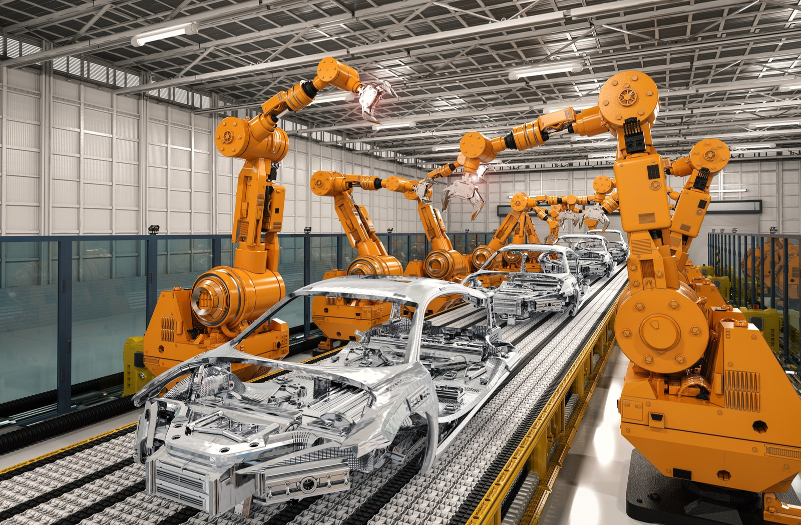
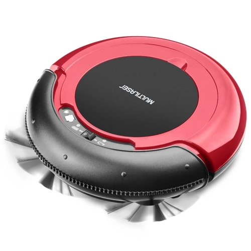
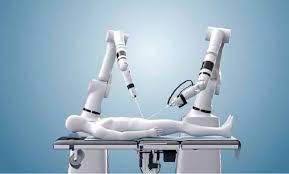
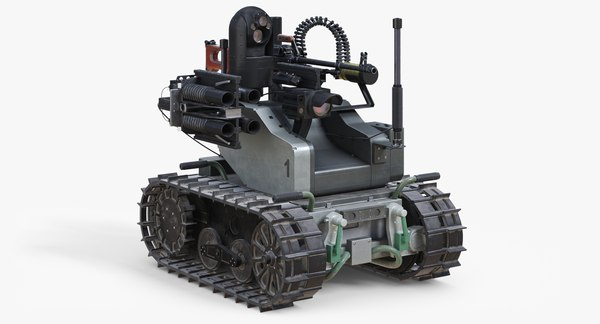
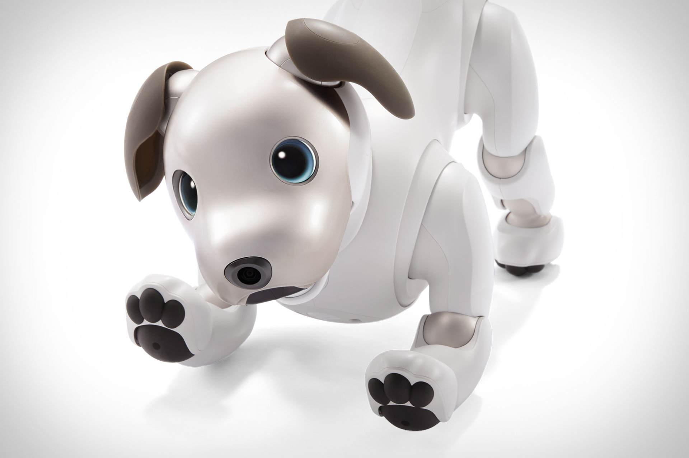
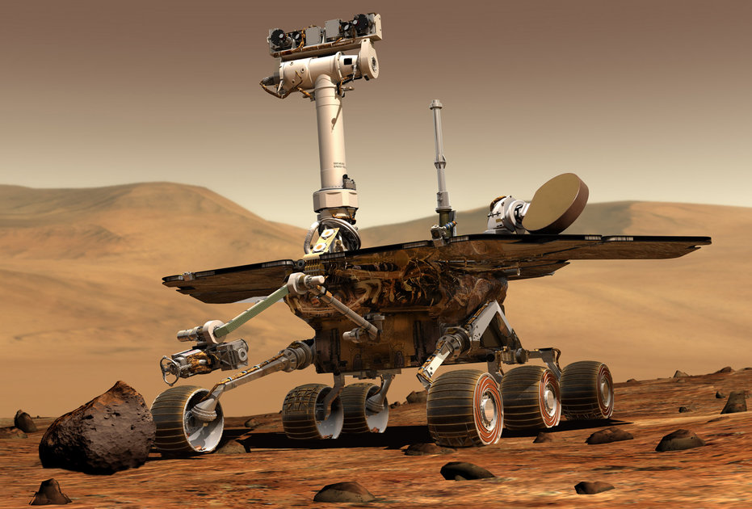
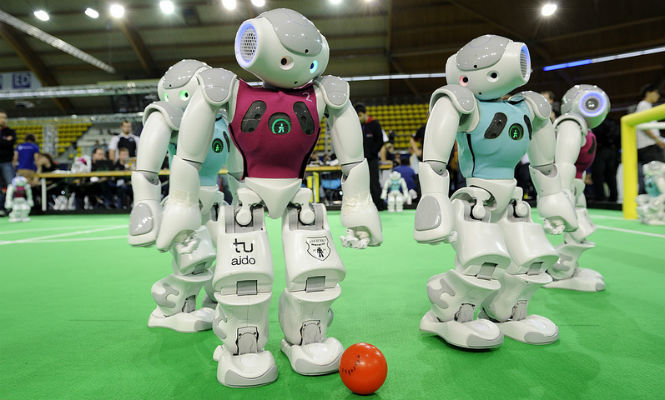

Como são utilizados?
Industriais
Tipicamente são utilizados para fundição, pintura, soldagem, montagem, movimentação de cargas, inspeção de produtos, reconhecimento de imagem, e realização de teste.
Com a migração para a indústria 4.0, a ideia é que a robótica esteja cada vez mais presente na linha de montagem – e fora dela.
Utilitários domésticos
Um robô doméstico é um tipo de robô de serviço, um robô autônomo que é usado principalmente para tarefas domésticas, mas também pode ser usado para educação, entretenimento ou terapia.
Alguns exemplos são: robô limpa-vidros, aspirador robótico, robô guardião, auxiliar de cozinha e para cortar grama.
Médicos
Usadosna medicina e instituições médicas. Primeiro e acima de tudo, são robôs de cirurgia. Além disso, podem ser inclusos nessa classificação alguns veículos guiados automatizados e talvez robôs que ajudam no manuseio de pacientes, carregando-o.
Por exemplo o robô Da Vinci, que faz parte da rotina de atendimentos complexos em hospitais brasileiros.
Serviço

São robôs que não se encaixam em outros tipos de uso. Podem ser robôs de coleta de dados, robôs feitos para mostrar tecnologias, robôs usados para pesquisas, etc.
Sempre que um robô não se encaixar em outras classificações, a de serviço é uma boa opção para escolher.
Militares
Este tipo de robôs inclui robôs de desarmamento de bombas, robôs de transporte, drones de reconhecimento.
Muitas vezes robôs inicialmente criados para fins militares podem ser usados em outros contextos, como busca e salvamento, auxílio a policiais e bombeiros, desarmamento de bombas e outros campos relacionados.
Entreterimento

Um robô de entretenimento é, como o nome indica, um robô que não é feito para uso utilitário, como na produção ou nos serviços domésticos, mas para o único prazer subjetivo do ser humano. Ele serve, geralmente o proprietário ou seus colegas de casa, convidados ou clientes. As tecnologias robóticas são aplicadas em muitas áreas da cultura e entretenimento.
Os robôs de entretenimento também podem ser vistos no contexto das artes midiáticas, onde o artista tem empregado tecnologias avançadas para criar ambientes e expressões artísticas, utilizando também os atuadores e sensores para permitir que seus robôs reajam e mudem em relação aos espectadores.
Espaciais

Robôs usados no espaço devem ser destacados como um tipo separado. Este tipo inclui robôs usados na Estação Espacial Internacional, robôs de ônibus espaciais, assim como os robôs que estão em Marte e outros que foram usados no espaço.
Uma espaçonave robótica projetada para fazer medições de pesquisas científica é geralmente chamada de sonda espacial.
Caseiros e de competições

São os robôs que você pode criar. Robôs de combate, robôs de luta, robôs feitos apenas para o divertimento e robôs feitos para a competição.
Se não há um propósito claro para o uso do robô, e você o criou apenas para desafias suas habilidades e a de outras pessoas, seu robô se encaixa nessa categoria.